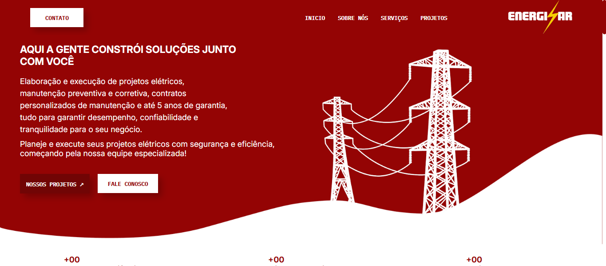
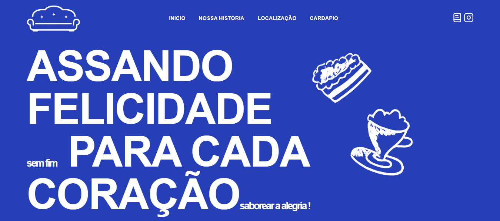
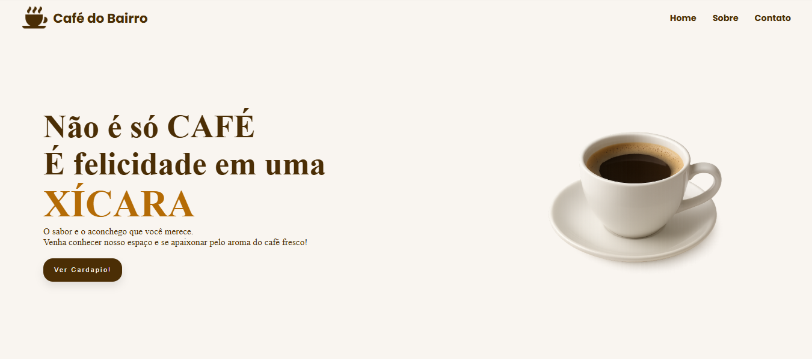
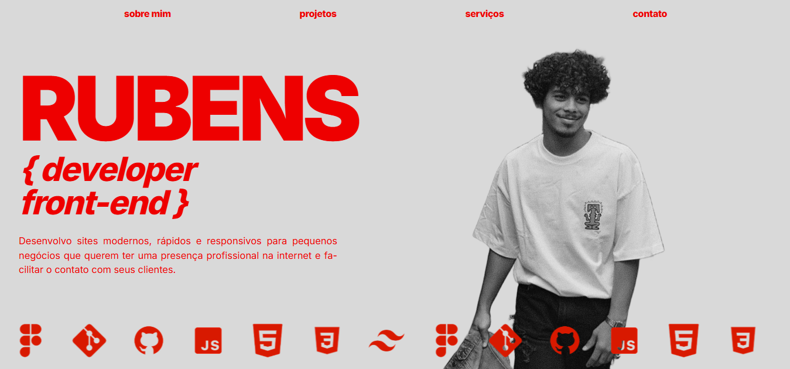

Site institucional para uma empresa de eletrotécnica, com apresentação dos serviços, projetos elétricos e canais de contato.

Site institucional para uma empresa de eletrotécnica, com apresentação dos serviços, projetos elétricos e canais de contato.

Site de uma cafeteria mineira com visual aconchegante, cardápio, história e localização. Desenvolvido com Tailwind CSS.

Site simples para uma cafeteria de bairro, feito apenas com HTML e CSS, sem interações: leve, direto e fácil de usar.

Meu próprio portfólio: reúne quem eu sou, meus projetos, serviços e contato, com carrossel de tecnologias e layout responsivo.